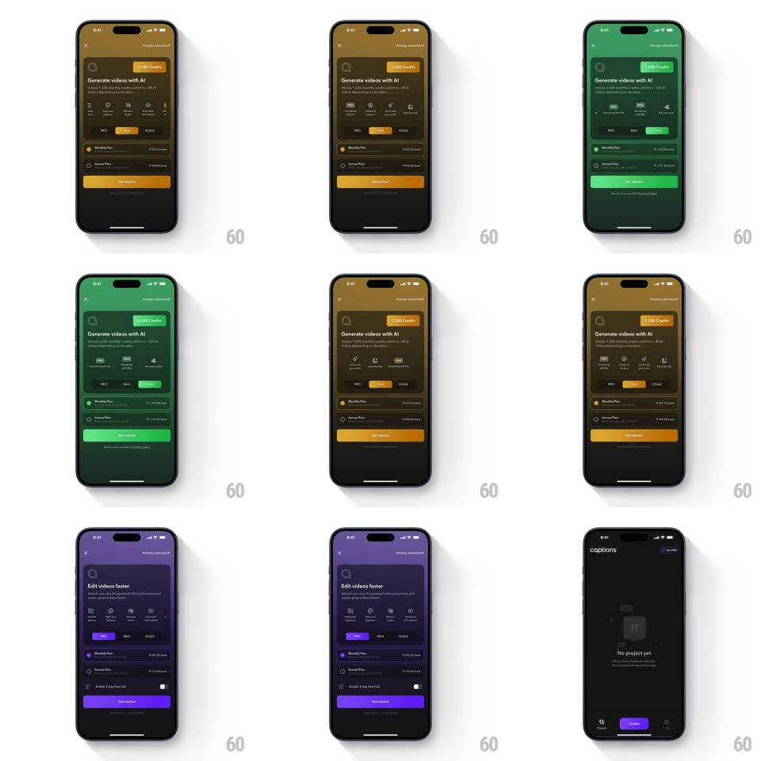

Media
Frame-by-frame

Rebuild this interaction 1:1: the Captions pricing screen's tier tabs - switching between PRO, MAX, and SCALE retints the entire paywall: background, headline, feature icons, plan radio buttons, and the CTA button all flood to the tier's accent (purple, orange/gold, green) in one coordinated wipe.

Rebuild this interaction 1:1: the Captions pricing screen's tier tabs - switching between PRO, MAX, and SCALE retints the entire paywall: background, headline, feature icons, plan radio buttons, and the CTA button all flood to the tier's accent (purple, orange/gold, green) in one coordinated wipe.
## Integration
Integration: stack-agnostic spec - springs given as stiffness/damping, timed motions as duration + curve; map every value to your framework and animation library of choice.
## Scene
Dark paywall: subscription-status chip top-right, headline ("Edit videos faster" / "Generate videos with AI"), a row of feature icons, the three-tier segmented tabs (PRO / MAX / SCALE) with the active tier highlighted, a "credits" pill, Monthly and Annual plan radio rows, and a full-width CTA button.
## Motion spec
Pattern: whole-screen theme swap keyed to a segmented control.
- Tap a tier: the tab pill slides to it (spring ~420/28, 280ms); simultaneously every accent element tweens color (300ms, ease-in-out): background gradient, headline highlight, feature icons, credits pill, selected plan radio, CTA button.
- Feature icons also swap their glyphs per tier, crossfading (200ms) with a 10px upward drift.
- The headline text crossfades per tier (200ms) while the color floods.
- The plan rows' prices stay put; only tints and the selected radio's ring color change.
## Calibration
- One transition, many surfaces - every tint lands on the same 300ms curve, no stagger, so the swap reads as a single event.
- PRO = purple, MAX = orange/gold, SCALE = green; inactive tiers keep their gray outlines.
## Reduced motion
All tints step to the new color with a 150ms fade; tab pill still slides.
## Don't miss
- The background itself retints (a colored top gradient over black) - not just the controls.
- Closing the sheet returns to the projects home, which stays untinted.